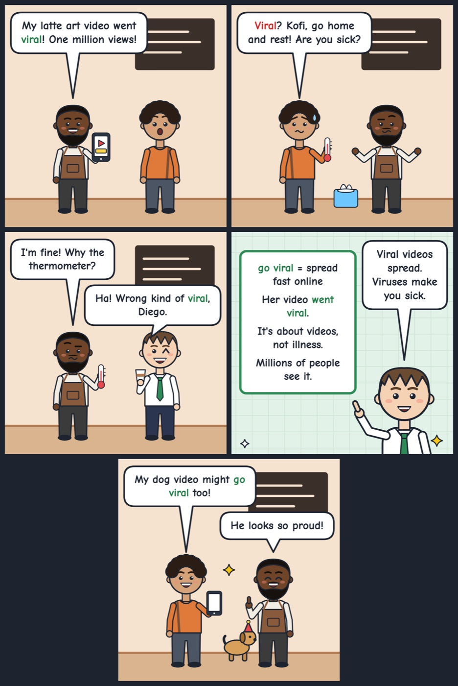

go viral
If something goes viral, it spreads very fast online and millions of people see it.
Her cooking video went viral and now everyone knows her café.
Go viral means to spread very quickly online. It is about content, not sickness.
Your turn
What kind of video would you love to see go viral?
What kind of video would you love to see go viral?
See it in a comic
